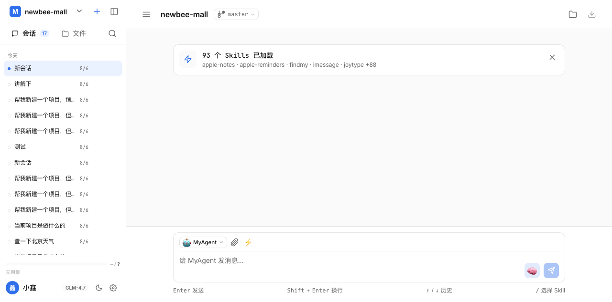
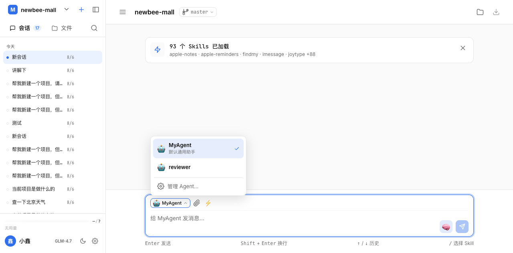

MyAgent
快速入门教程
基于 Pi Agent 的 AI Agent + Web 端
什么是 MyAgent？
MyAgent 是一个基于 Pi Agent 的小而巧的 AI Agent 系统
- Node.js 后端 - Fastify 框架，WebSocket 实时通信
- React 前端 - 现代化界面，支持多会话管理
- 可扩展 - 支持自定义工具和技能
- 多模型 - 支持 Anthropic、OpenAI、Ollama 等
安装配置
步骤 1: 安装依赖
$ pnpm install
步骤 2: 配置 API Key（以 Anthropic 为例）
$ export ANTHROPIC_API_KEY=sk-ant-your-key-here
也支持 OpenAI、Google、Ollama 等多种 LLM
启动服务
同时启动前后端：
$ pnpm dev
或分别启动：
$ pnpm dev:server
$ pnpm dev:web
主界面介绍

MyAgent 主界面 - 对话区域 + 工具执行展示
基本功能
对话交互
• 自然语言对话
• 多轮上下文记忆
• 实时思考过程展示
工具调用
• 读取文件
• 执行命令
• 搜索、创建文件等
切换模型

设置面板 - 切换 LLM Provider 和模型
Agent 管理

Agent 管理 - 创建自定义角色预设
扩展功能
- 自定义工具 - 在 session-manager.ts 中添加自定义工具
- Skills 系统 - 安装 ~/.pi/agent/skills 中的技能包
- 二次开发 - 修改前后端代码，定制功能
const myTool = defineTool({
name: "my_tool",
description: "描述...",
execute: async (args) => { ... }
});
开始体验 MyAgent
快速上手 · 自定义扩展 · 无限可能
https://github.com/your-repo/myagent